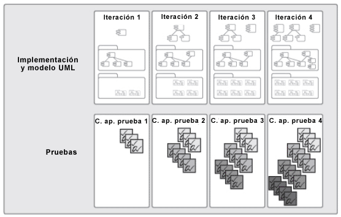

| Concepto: Centrarse continuamente en la calidad |
 |
|
DiscusiónPor lo tanto, mejorar la calidad no es sólo "cumplir requisitos" o crear un producto que cumpla las necesidades y las expectativas del usuario. Obtener calidad incluye la identificación de medidas y criterios que demuestran que se ha conseguido calidad, y la implementación de un proceso que garantice que el producto ha conseguido el grado de calidad deseado, y que puede repetirse y gestionarse. Garantizar una alta calidad precisa más que la participación del equipo de pruebas; es necesario que todo el equipo sea propietario de la calidad. Implica a todos los miembros del equipo y a todos los protagonistas del ciclo vital:
Cuando experimentamos un problema de calidad, todos los miembros del grupo deben desear aportar su grano de arena para la solución. Una de las mayores ventajas del desarrollo iterativo es que permite un enfoque de prueba temprana y de forma continua, como se ilustra a continuación. Para cuando se llegue al final de un proyecto, y como las funciones más importantes ya se han implementado en fases anteriores, el software más esencial puede haber estado en ejecución durante meses, y es por tanto muy probable que ya se haya probado durante meses. No es ninguna sorpresa que la mayoría de los proyectos que adoptan el desarrollo iterativo muestren que el aumento de la calidad es uno de los principales y más tangibles resultados del proceso mejorado. 
Las pruebas empiezan temprano y se amplían en cada iteración A medida que se va construyendo la aplicación de forma incremental, se debe también construir de forma incremental la automatización de las pruebas para detectar los defectos desde el principio, y para minimizar las inversiones iniciales. A medida que se diseña el sistema, se va considerando cómo deben realizarse las pruebas. Si se toman las decisiones adecuadas de diseño, se puede mejorar enormemente la capacidad de automatizar las pruebas. Asimismo, se puede generar código de prueba directamente a partir de los modelos de diseño. De esta forma se ahorra tiempo, se proporcionan incentivos para realizar pruebas desde el principio y se aumenta la calidad de las pruebas minimizando el número de errores en el software de prueba. Las pruebas automatizadas han sido un área clave de atención para, entre otros, la comunidad Agile, en la que la idea es automatizar las pruebas de todo el código de prueba y en la que las pruebas se escriben antes que el código (diseño con prueba inicial). |
© Copyright IBM Corp. 1987, 2006. Reservados todos los derechos. |